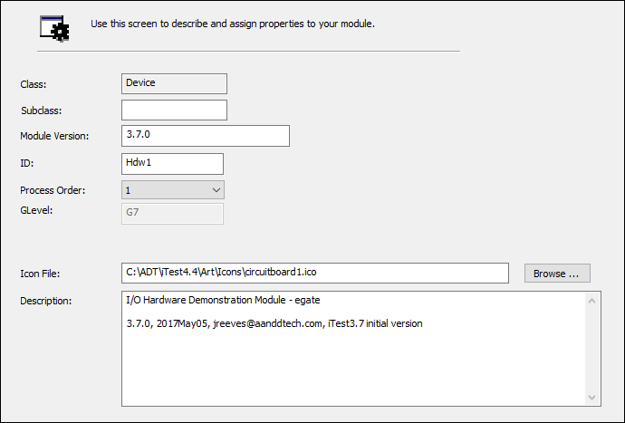
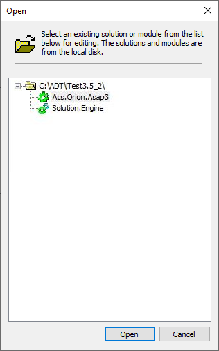
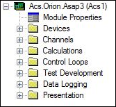

iTest User's Guide
Modules in iTest are a collection of iTest files that are designed to be added and removed from your solution as a named unit and provide additional functionality (e.g., running a specific test or providing a ready to run interface to a device). To support the use of modules, set the MODULARITY powertek.ini setting to TRUE. For more information about modules, refer to the Modules in iTest documentation. This document details how to manage modules in Test Manager.
There are two methods to import modules in Test Manager:
There are two methods to export modules in Test Manager:
For more information about importing and exporting modules, refer to the Modules in iTest documentation.
The Module Properties editor is used to describe and assign properties to your module. This editor can be accessed by double-clicking the Module Properties node.
Module Properties Editor

Module Editor Fields
| Field | Description |
| Class | The module type (i.e., System, Device, Specimen, Test, Utility). |
| Subclass | The module subclass. This is used to differentiate between device modules. For example, in iTest.BTS, the Bcc1PolyScience and the Cincinnati CSZ560i modules use the Device class, indicating that they are device modules. However, the Bcc1PolyScience module uses the Chiller subclass while the Cincinnati CSZ560i module uses the Chamber subclass. |
| Module Version | The module version number. |
| ID | The module ID. This field is read-only for the System module (i.e., Sys). If using SolutionBuilder, click the Change... button to change the module ID. You must either save previous modifications or reopen the solution prior to changing the module ID. Refer to the Module Naming section for the proper naming convention. |
| Process Order | Select the process order for the module. The process order defines the order for the calculations compared to the other modules in the solution. A lower number will always precede a higher number when the calculation files are ordered. |
| GLevel | The GLevel used for the module. This field can only be edited in the Module Properties editor; otherwise, this field will be read-only. |
| Icon File | The icon file used for the module. |
| Description | The description for the module. This is typically used to enter revision notes for the module. |
| File Name* | The list of files available in the module. You can double-click the file name to edit it if the editor is available. For example, double-clicking a layout file will launch the Layouts editor. If an editor is not available, then an error message will display. |
| Channel Definitions* | The list of channels available in the module including the channel name, channel type, description, and more. |
If you export a module from your solution to the $SYSTEMDIR, you will be able to open that module directly in Test Manager. This allows you to work on the module independently of the solution. This can often be an easier way to see all of the features a module has to offer and make changes. After editing the standalone module, you will be required to add it back to a solution to test and validate your changes.
To open a standalone module, select File > Open from the Test Manager menu. The Open dialog shows both modules and solutions in the $SYSTEMDIR. If you select a module to edit, the Test Manager tree will no longer show a Modules element in the tree as modules cannot contain other modules. The top node in the tree for a module is Module Properties.
Open Module

Module Properties

The following options are available when right-clicking on the Modules node or on a specific module in Test Manager's tree bar:
Right-Click Options
| Option | Description |
| New | Launches the New Module dialog, allowing you to create a new module. Modules are created from either a template module or a pre-existing module in LabCentral. |
| Add Module | Launches the Add Module dialog, allowing you to import a module. For more information, refer to the Importing Modules documentation. |
| Channel Assignment | Launches the Channel Assignment dialog, allowing you to assign module channels to system I/O channels where appropriate. For more information, refer to the Channel Assignment documentation. |
| Module Configuration | Launches the Module Configuration dialog, allowing you to determine module settings from a single interface. For more information, refer to the Module Configuration Dialog documentation. |
| Export | Exports the selected module to your local drive or to LabCentral. For more information, refer to the Exporting Modules documentation. |
| Update | Downloads the latest version of the module from LabCentral. This option is only available when ModuleRevisionControl=TRUE. For more information, refer to the Updating Modules documentation. |
| Delete | Deletes the selected module. You will be prompted to confirm the deletion. Selecting Yes will completely remove the module from your solution. |
| Copy | Copies or duplicates the selected module. A dialog displays, prompting you to enter the name and module ID for the new module. |
| Rename | Renames the module. If there are any open files in Test Manager, they will be closed before performing the rename. Refer to the Module Naming documentation for the proper naming convention. |
| Properties | Opens the Module Properties editor. For more information, refer to the Viewing and Changing an Imported Module section above. |